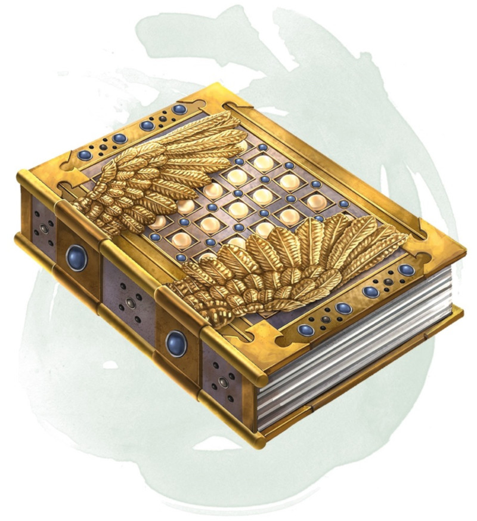

Les Chapitres sacrés
Objet merveilleux, artéfact (nécessite un lien avec une créature d'alignement bon)
Traité ultime sur tout ce qui représente le Bien dans le multivers, les légendaires Chapitres sacrés sont mentionnés avec insistance dans de nombreuses religions. Plus qu'une sainte écriture en l'honneur d'une seule foi, les multiples auteurs du livre en remplirent les pages avec leur propre vision de ce qu'est la véritable vertu, offrant un véritable guide à tous ceux qui souhaiteraient vaincre le Mal.
Les Chapitres sacrés s'attardent rarement au même endroit. Dès que le livre est lu, il disparaît vers un autre recoin du multivers, là où les préceptes moraux qu'il recèle pourront apporter la lumière au milieu des ténèbres. Bien qu'il y ait eu plusieurs tentatives de copie du livre, les efforts visant à reproduire sa nature magique ou à retranscrire les bénéfices qu'il confère aux cœurs purs et aux esprits droits ont toujours échoué.
Un lourd fermoir, travaillé pour qu'il ressemble à des ailes d'ange, garde le contenu du livre sous scellé. Seule une créature d'alignement bon qui est liée au livre peut enlever le fermoir qui protège ses secrets. Une fois que le livre est ouvert, la créature qui y est liée doit passer 80 heures à lire et étudier le livre pour en assimiler tout le contenu et en gagner les bénéfices. Les autres créatures qui scrutent les pages du livre ouvert peuvent en lire le texte mais n'en découvrent pas le sens profond et n'en obtiennent aucun bénéfice. Une créature mauvaise qui tente de lire le livre subit 24d6 dégâts radiants. Ces dégâts ignorent la résistance et l'immunité aux dégâts, et ne peuvent pas être réduits ni évités de quelque manière que ce soit. Une créature qui tombe à 0 point de vie à cause de ces dégâts disparaît dans un flash aveuglant et est détruite, laissant ses possessions derrière elle.
Les bénéfices conférés par les Chapitres sacrés perdurent aussi longtemps que vous vous astreignez à faire le bien. Si vous ne parvenez pas à effectuer au moins un acte de générosité ou de bienveillance sur une période de 10 jours, ou si vous agissez volontairement de manière mauvaise, vous perdez tous les bénéfices que vous a conférés le livre.
Propriétés aléatoires. Les Chapitres sacrés possèdent un certain nombre de propriétés déterminées aléatoirement :
• 2 propriétés bénéfiques mineures
• 2 propriétés bénéfiques majeures
Augmentation de Sagesse. Après que vous ayez passé le temps nécessaire à lire et étudier le livre, votre valeur de Sagesse augmente de 2, pour un maximum de 24. Vous ne pouvez pas bénéficier une seconde fois de cette augmentation de caractéristique due au livre.
Magie éclairée. Une fois que vous avez lu et étudié le livre, tout emplacement de sort que vous dépensez pour lancer un sort de clerc ou de paladin compte comme étant un emplacement de sort supérieur de un niveau.
Halo. Une fois que vous avez lu et étudié le livre, vous bénéficiez d'un halo protecteur. Ce halo émet une lumière vive dans un rayon de 3 mètres et une lumière faible sur 3 mètres supplémentaires. Vous pouvez annuler ou réactiver ce halo en utilisant une action bonus. Tant qu'il est présent, le halo vous confère un avantage aux jets de Charisme (Persuasion) effectués pour interagir avec des créatures d'alignement bon et aux jets de Charisme (Intimidation) effectués pour interagir avec des créatures d'alignement mauvais. De plus, les fiélons et les morts-vivants se trouvant dans le rayon de lumière vive du halo effectuent leurs jets d'attaque contre vous avec un désavantage.
Détruire le livre. La légende veut que les Chapitres sacrés ne puissent pas être détruit tant qu'il existera une créature d'alignement bon dans le multivers. Cependant, plonger le livre dans la rivière Styx fait disparaître les textes et illustrations de ses pages et fait perdre au livre son pouvoir pendant 1d100 années.
Les Chapitres sacrés s'attardent rarement au même endroit. Dès que le livre est lu, il disparaît vers un autre recoin du multivers, là où les préceptes moraux qu'il recèle pourront apporter la lumière au milieu des ténèbres. Bien qu'il y ait eu plusieurs tentatives de copie du livre, les efforts visant à reproduire sa nature magique ou à retranscrire les bénéfices qu'il confère aux cœurs purs et aux esprits droits ont toujours échoué.
Un lourd fermoir, travaillé pour qu'il ressemble à des ailes d'ange, garde le contenu du livre sous scellé. Seule une créature d'alignement bon qui est liée au livre peut enlever le fermoir qui protège ses secrets. Une fois que le livre est ouvert, la créature qui y est liée doit passer 80 heures à lire et étudier le livre pour en assimiler tout le contenu et en gagner les bénéfices. Les autres créatures qui scrutent les pages du livre ouvert peuvent en lire le texte mais n'en découvrent pas le sens profond et n'en obtiennent aucun bénéfice. Une créature mauvaise qui tente de lire le livre subit 24d6 dégâts radiants. Ces dégâts ignorent la résistance et l'immunité aux dégâts, et ne peuvent pas être réduits ni évités de quelque manière que ce soit. Une créature qui tombe à 0 point de vie à cause de ces dégâts disparaît dans un flash aveuglant et est détruite, laissant ses possessions derrière elle.
Les bénéfices conférés par les Chapitres sacrés perdurent aussi longtemps que vous vous astreignez à faire le bien. Si vous ne parvenez pas à effectuer au moins un acte de générosité ou de bienveillance sur une période de 10 jours, ou si vous agissez volontairement de manière mauvaise, vous perdez tous les bénéfices que vous a conférés le livre.
Propriétés aléatoires. Les Chapitres sacrés possèdent un certain nombre de propriétés déterminées aléatoirement :
• 2 propriétés bénéfiques mineures
• 2 propriétés bénéfiques majeures
Augmentation de Sagesse. Après que vous ayez passé le temps nécessaire à lire et étudier le livre, votre valeur de Sagesse augmente de 2, pour un maximum de 24. Vous ne pouvez pas bénéficier une seconde fois de cette augmentation de caractéristique due au livre.
Magie éclairée. Une fois que vous avez lu et étudié le livre, tout emplacement de sort que vous dépensez pour lancer un sort de clerc ou de paladin compte comme étant un emplacement de sort supérieur de un niveau.
Halo. Une fois que vous avez lu et étudié le livre, vous bénéficiez d'un halo protecteur. Ce halo émet une lumière vive dans un rayon de 3 mètres et une lumière faible sur 3 mètres supplémentaires. Vous pouvez annuler ou réactiver ce halo en utilisant une action bonus. Tant qu'il est présent, le halo vous confère un avantage aux jets de Charisme (Persuasion) effectués pour interagir avec des créatures d'alignement bon et aux jets de Charisme (Intimidation) effectués pour interagir avec des créatures d'alignement mauvais. De plus, les fiélons et les morts-vivants se trouvant dans le rayon de lumière vive du halo effectuent leurs jets d'attaque contre vous avec un désavantage.
Détruire le livre. La légende veut que les Chapitres sacrés ne puissent pas être détruit tant qu'il existera une créature d'alignement bon dans le multivers. Cependant, plonger le livre dans la rivière Styx fait disparaître les textes et illustrations de ses pages et fait perdre au livre son pouvoir pendant 1d100 années.
Dungeon Master´s Guide
